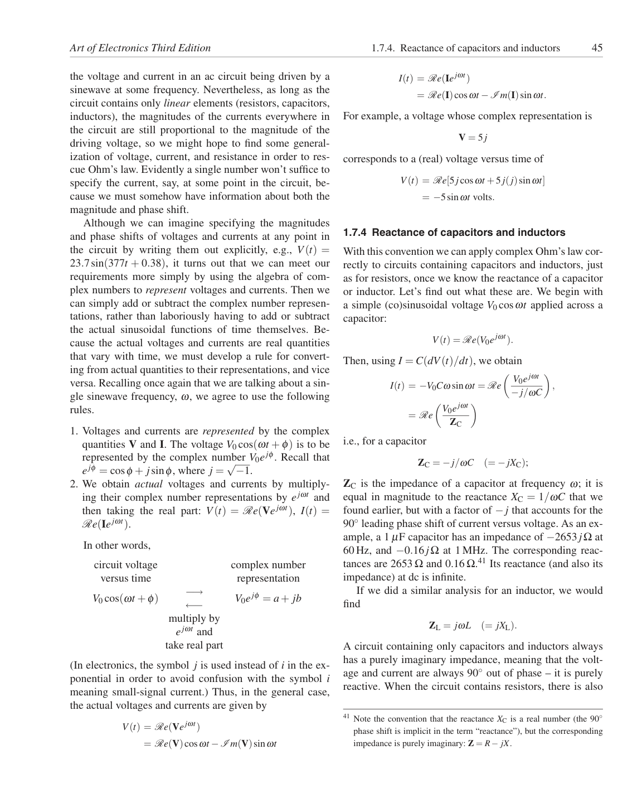

<!doctype html>
<html lang="en"><head><meta charset="utf-8"><meta name="viewport" content="width=device-width,initial-scale=1">
<title>Page 45 of 70</title><meta name="source-page" content="45"><link rel="stylesheet" href="../styles.css">
<link rel="prev" href="page-044.html"><link rel="next" href="page-046.html"></head><body>
<header><div><a class="back" href="../index.html">All pages</a> <span class="meta">Source page 45 / 70</span></div>
<nav class="nav" aria-label="Page navigation"><a href="page-044.html">Previous</a><a href="page-046.html">Next</a></nav></header>
<main><h1 class="meta">Page 45</h1><figure class="sheet"></figure>
<details class="transcript" open><summary>Fetchable text — page 45</summary><div class="text"><p>Art of Electronics Third Edition
1.7.4. Reactance of capacitors and inductors
45</p><p>I(t) = Re(Iejωt)</p><p>= Re(I)cosωt −I m(I)sinωt.</p><p>For example, a voltage whose complex representation is</p><p>V = 5j</p><p>corresponds to a (real) voltage versus time of</p><p>V(t) = Re[5jcosωt +5j(j)sinωt]</p><p>= −5sinωt volts.</p><p>the voltage and current in an ac circuit being driven by a
sinewave at some frequency. Nevertheless, as long as the
circuit contains only linear elements (resistors, capacitors,
inductors), the magnitudes of the currents everywhere in
the circuit are still proportional to the magnitude of the
driving voltage, so we might hope to find some generalization of voltage, current, and resistance in order to rescue Ohm’s law. Evidently a single number won’t suffice to
specify the current, say, at some point in the circuit, because we must somehow have information about both the
magnitude and phase shift.</p><p>1.7.4 Reactance of capacitors and inductors</p><p>With this convention we can apply complex Ohm’s law correctly to circuits containing capacitors and inductors, just
as for resistors, once we know the reactance of a capacitor
or inductor. Let’s find out what these are. We begin with
a simple (co)sinusoidal voltage V0 cosωt applied across a
capacitor:</p><p>V(t) = Re(V0ejωt).</p><p>Then, using I = C(dV(t)/dt), we obtain</p><p></p><p> V0ejωt</p><p>,</p><p>I(t) = −V0Cω sinωt = Re</p><p>−j/ωC</p><p></p><p>V0ejωt</p><p>Although we can imagine specifying the magnitudes
and phase shifts of voltages and currents at any point in
the circuit by writing them out explicitly, e.g., V(t) =
23.7sin(377t + 0.38), it turns out that we can meet our
requirements more simply by using the algebra of complex numbers to represent voltages and currents. Then we
can simply add or subtract the complex number representations, rather than laboriously having to add or subtract
the actual sinusoidal functions of time themselves. Because the actual voltages and currents are real quantities
that vary with time, we must develop a rule for converting from actual quantities to their representations, and vice
versa. Recalling once again that we are talking about a single sinewave frequency, ω, we agree to use the following
rules.</p><p>= Re</p><p>ZC</p><p>i.e., for a capacitor</p><p>ZC = −j/ωC
(= −jXC);</p><p>1. Voltages and currents are represented by the complex
quantities V and I. The voltage V0 cos(ωt + φ) is to be
represented by the complex number V0ejφ. Recall that
ejφ = cosφ + jsinφ, where j = √−1.
2. We obtain actual voltages and currents by multiplying their complex number representations by ejωt and
then taking the real part: V(t) = Re(Vejωt), I(t) =
Re(Iejωt).</p><p>In other words,</p><p>circuit voltage</p><p>complex number</p><p>ZC is the impedance of a capacitor at frequency ω; it is
equal in magnitude to the reactance XC = 1/ωC that we
found earlier, but with a factor of −j that accounts for the
90◦leading phase shift of current versus voltage. As an example, a 1 μF capacitor has an impedance of −2653jΩ at
60 Hz, and −0.16jΩ at 1 MHz. The corresponding reactances are 2653 Ω and 0.16 Ω.41 Its reactance (and also its
impedance) at dc is infinite.</p><p>versus time</p><p>representation</p><p>If we did a similar analysis for an inductor, we would
find</p><p>V0 cos(ωt +φ)
−→
←−
V0ejφ = a+ jb</p><p>multiply by</p><p>ZL = jωL
(= jXL).</p><p>ejωt and
take real part</p><p>A circuit containing only capacitors and inductors always
has a purely imaginary impedance, meaning that the voltage and current are always 90◦out of phase – it is purely
reactive. When the circuit contains resistors, there is also</p><p>(In electronics, the symbol j is used instead of i in the exponential in order to avoid confusion with the symbol i
meaning small-signal current.) Thus, in the general case,
the actual voltages and currents are given by</p><p>41 Note the convention that the reactance XC is a real number (the 90◦</p><p>V(t) = Re(Vejωt)</p><p>phase shift is implicit in the term “reactance”), but the corresponding
impedance is purely imaginary: Z = R−jX.</p><p>= Re(V)cosωt −I m(V)sinωt</p></div></details></main>
<footer>Visual layout, figures, tables, equations, footnotes, and original printed page number are preserved in the lossless page image. <a href="../text/page-045.txt">Plain text</a> · <a href="../data/page-045.json">JSON</a></footer>
</body></html>